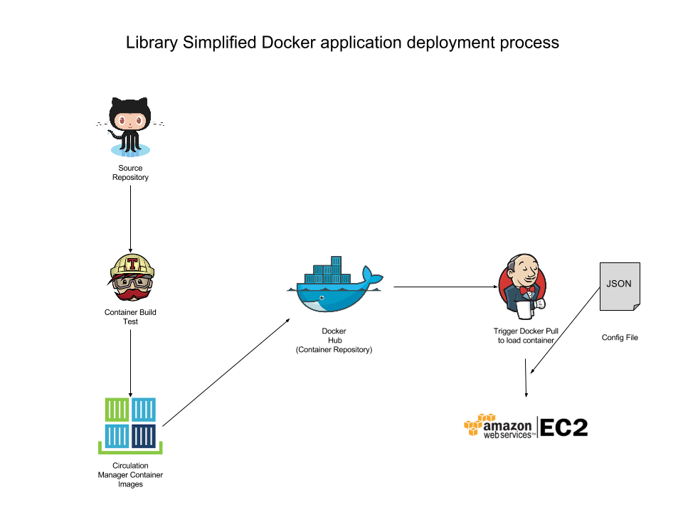

How to deply Library Simplified applications into your library
Library Simplified application services are designed to be run in the cloud. This provides libraries with no IT infrastructure and few IT management resources the ability to provide high availability services for less.
1: Build your cloud
Goto Amazon and provision server, network and data storage resources .
2: Get the software
Visit the Library Simplified Github Repository here.
3: Configure
Configure the application for your particular envronment and services.
Library Simplified application services are designed to be run in the cloud. This provides libraries with no IT infrastructure and few IT management resources the ability to provide high availability services for less.
1: Build your cloud
Goto Amazon and provision server, network and data storage resources .
2: Get the software
Visit the Library Simplified Github Repository here.
3: Configure
Configure the application for your particular envronment and services.
Build your cloud
"Cloud Computing", by definition, refers to the on-demand delivery of IT resources and applications via the Internet with pay-as-you-go pricing. The following page provides step-by-step instructions for deploying any of the Library Simplified server components in the cloud.
Sample EC2 set up and costs
Amazon EC2
Amazon EC2 provides a wide selection of instance types optimized to fit different use cases. Instance types comprise varying combinations of CPU, memory, storage, and networking capacity and give you the flexibility to choose the appropriate mix of resources for your applications. Each instance type includes one or more instance sizes, allowing you to scale your resources to the requirements of your target workload. For Library Simplified (at The New York Public Library) we are using a combination of T2 instances, Relational Database Services, Simple Storage Services, and Content Delivery Network services to implement a low cost, low latency, highly scalable Library Simplified environment.
EC2 Server Types
- T2 instances are burstable performance instances that provide a baseline level of CPU performance with the ability to burst above the baseline. T2 instances are a good choice for workloads that don’t use the full CPU often or consistently, but occasionally need to burst (e.g. web servers, developer environments and small databases). Learn more.
- Relational Database Service (RDS) is a managed service that makes it easy to set up, operate, and scale a relational database in the cloud. It provides cost-efficient and resizable capacity, while managing time-consuming database administration tasks, freeing you up to focus on applications and services. RDS automatically receive patches to the database software and backs up to your database, storing the backups for a your user-defined retention period. Learn more.
- Simple Storage Service (Amazon S3), provides developers and IT teams with secure, durable, highly-scalable object storage. S3 is easy to use, with a simple web services interface to store and retrieve any amount of data from anywhere on the web. Amazon S3 can be used alone or together with other AWS services such as Amazon Elastic Compute Cloud (Amazon EC2), Amazon Elastic Block Store (Amazon EBS), and Amazon Glacier, as well as third party storage repositories and gateways. Learn more
- A Content Delivery Network (CDN) is a system of distributed servers that deliver webpages and other Web content to a users based on the geographic locations of the user and the origin of the content delivery server in order to reduce network induced latency. Amazon's CloudFront is a content delivery web service. It integrates with other Amazon Web Services products to give developers and businesses an easy way to distribute content to end users with low latency, high data transfer speeds, and no minimum usage commitments. Learn more.
Environment Diagram
Frontend
The frontend environment represents the publicly exposed service resources that allow for content syndication and discovery. This is the layer of the application that is accessed by the iOS and Android client applications.

Backend
The backend environment represents the service resources that are not exposed publically for data and content management and content hosting and content host integration. This is the layer of the application that is primarily accessed by the circulation server and from time to time by the iOS and Android client applications by way of the OPDS interface.

Sample pre-prodcution (QA) server environment and costs
| Environment | Quantity | Service Type | Cost/hr | Cost/Day | Extended | Purpose |
|---|---|---|---|---|---|---|
| QA/Pre Production | 3 | EC2 m1.small | $0.026 | $0.624 | $1.872 | Circulation load balanced | 2 | EC2 t2.micro | $0.013 | $0.312 | $0.624 | Circulation load balanced |
| 1 | RDS t2.medium | $0.2451 | $5.8824 | $5.8824 | Circulation load balanced | |
| 1 | RDS t2.micro | $0.149 | $3.576 | $3.576 | Patron Account Sign Up | |
| 1 | RDS t2.micro | $0.149 | $3.576 | $3.576 | Content Server (Optional) | |
| 1 | RDS t2.medium | $0.2451 | $5.8824 | $5.8824 | Metadata Wrangler (Optional) | |
Sample Production Environment server instances and costs.
| Environment | Quantity | Service Type | Cost/hr | Cost/Day | Extended | Purpose |
|---|---|---|---|---|---|---|
| Live /Production | 3 | EC2 m1.small | $0.026 | $0.624 | $1.872 | Circulation load balanced | 2 | EC2 t2.micro | $0.013 | $0.312 | $0.624 | Circulation load balanced |
| 1 | RDS t2.medium | $0.2451 | $5.8824 | $5.8824 | Circulation load balanced | |
| 1 | RDS t2.micro | $0.149 | $3.576 | $3.576 | Patron Account Sign Up | |
| 1 | RDS t2.micro | $0.149 | $3.576 | $3.576 | Content Server (Optional) | |
| 1 | RDS t2.medium | $0.2451 | $5.8824 | $5.8824 | Metadata Wrangler (Optional) |
Library Simplified Code Repository
The Library Simplified application and source code is available on GitHub. GitHub is a web-based Git repository hosting service, which offers all of the distributed revision control and source code management (SCM) functionality of Git.
Quick Links...
- The repositories are located at https://github.com/NYPL-Simplified.
- The project has a general wiki for project. It is can be found at https://github.com/NYPL-Simplified/Simplified/wiki.
Deployment instructions
To begin to install the applications you will need to follow the deployment instructions provided in the main repositories wiki at https://github.com/NYPL-Simplified/Simplified/wiki/Deployment-Instructions.
There are several repositories in the project. The following repositories are required to the run the application.
Required server software
- Server Core at https://github.com/NYPL-Simplified/server_core.
The Server Core contains functionality common between various LS servers, including database models and essential class constants, OPDS parsers, and certain configuration details. The OA Content Server, Metadata Wrangler, and Circulation Manager all depend on this code base.
- Circulation Manager at https://github.com/NYPL-Simplified/circulation.
The Circulation Manager is the main connection between a library's collection and Library Simplified's various client-side applications. It handles user authentication, combines licensed works with open access content from the OA Content Server, pulls in updated book information from the Metadata Wrangler, and serves up available books in appropriately organized OPDS feeds. NOTE: This application depends on the Server Core as a git submodule.
Optional Server Software
There are optional server components that a library may implement - Open Access (OA) Content Server, Metadata Wrangler and Card Creator. These applications are purely optional because The New York Public Library will be providing functions for some of these servers as a service to implementing libraries so they do not have to install and host the servers. Card Creator is an optional application which will not be provided as a service which needs to be customized on an individual basis by libraries. which will allow libraries to incorporate remote library card application and proof of eligibility documentation in a secure and controlled process so that user data and privacy is secured in transit and at rest during the application review process and promptly deleted from library systems upon acceptance or rejection.
- OA Content Server at https://github.com/NYPL-Simplified/content_server
The OA Content Server collects and parses sources and preserves metadata for open access works, serving them up in a feed with verbose OPDS entries. NOTE: This application depends on the Server Core as a git submodule.
- Metadata Wrangler at https://github.com/NYPL-Simplified/metadata_wrangler
The Metadata Wrangler utilizes and intelligently amalgamates a wide variety of information sources for library ebooks and incorporates them into the reading experience for users by improving selection, search, and recommendations.
NOTE: This application depends on the Server Core as a git submodule.
- Card Creator at https://github.com/NYPL-Simplified/card-creator
The Card Creator application allows libraries to incorporate remote library card application and proof of eligibility documentation in a secure and controlled process so that user data and privacy is secured in transit and at rest during the application review process and promptly deleted from library systems upon acceptance or rejection.

Containers
The application can also be deployed as a containerized application if your IT practices take advantage of this technology. Instead of building and deplying the application from the source repository, the Library Simplified Team also provides a containerized version of the application using Docker. Docker is an open-source project that automates the deployment of applications inside software containers, by providing an additional layer of abstraction and automation of operating-system-level virtualization on Linux. Docker can package an application and its dependencies in a virtual container that can run on any Linux server. This helps enable flexibility and portability on where the application can run, on premises, in a public cloud, on a private cloud, or bare metal machines.
Using a deployment management tool like Jenkins, a docker containter can be pulled down by the repsective library from Docker Hub as a self contained application container onto your infrastructure (for example EC2.) This simplifies application implementation and deployment by prepackaging the application and all the required stack technolgies and dependencies with out having to manualy configure or run PIP and GIT commands. Simply pull the latest compatible container version, update the JSON configuration file during the deploy process. For certain versions you may have to run some update scripts on your DB server.
The docker project and detailed deployment instructions can be found at https://github.com/NYPL-Simplified/Simplified/wiki/Deployment:-Quickstart-with-Docker
Client Application Software
The mobile client applications are currently contained in a private repositories. These will be eventually exposed in the upcoming weeks to open repositories. Partner libraries may obtain access to the repositories and the closed repositories for DRM that require a commercial license. Once the commercial license is obtained users can gain access to the code libraries that link to the commercial binaries distributed independently by the commercial DRM vendor.
NOTE: The application can be built without DRM support as an Open Access (non DRM) content e-reader. However, a Readium License is still required. This license can be obtained directly from the Readium Foundation at special Non-Profit rate. Additionally Minitex provide a special Non-profit license as well specifically to public, state and academic libraries as well at a reduce price. Visit their product page here to learn more.
- iOS Client at https://github.com/NYPL-Simplified/Simplified-iOS.
The iOS client is a native application written in Objective C and C++. There are optional cocoa pods for help ticket support. It can be built with or without DRM.
- Android Client at https://github.com/NYPL-Simplified/android.
The Android client is a native application written in Java and C++. There are optional components for help ticket support. It can be built with or without DRM.
Configure
The configuration file contains all the necessary information to distinguish one Library Simplified installation from another. This file contains a lot of miscellaneous stuff, but the main sections are:
- Links to especially important information that differs between libraries (privacy policy, terms of service.)
- Policies that differ between libraries, such as how to authenticate patrons, whether patrons can put books on hold, and how books should be organized in lanes.
- Details on integrating with external pieces of software (such as the database) and third-party services (such as ebook providers.)
The circulation manager, the metadata wrangler, and the content server each need their own configuration file, but what goes into that configuration file differs from one component to the other.
The Configuration instructions can be found on github on the main project's wiki at https://github.com/NYPL-Simplified/Simplified/wiki/Configuration.
Maintaining the servers
The /bin directory contains autmated scripts that should be run every 5 minutes to keep your collections updated as well as fix data from time to time. The wiki link below lists the scripts and their purpose. Unless you are running a separate instance of Metadata Wrangler and OA Content Server as opposed using the NYPL public service, those instructions and scripts can be ignored. They will be done as part of NYPL's maintenance.
Automated Jobs https://github.com/NYPL-Simplified/Simplified/wiki/AutomatedJobs#jobs-that-should-be-run-as-needed
Management and Monitoring Tools
The ability to monitor your cloud environment and application services is important. Libraries and their technical staff need simple tools for keeping your ebook service running and scallable so that users have a wonderful and consistent Library Ebook service experience. While you may have your own tools that you prefer to manage your enterprise or cloud systems, the following are examples of what the Library Simplifed Team use for the project, Open eBooks and the New York Public Library.
Environment Management
| Product | Delivery | Purpose |
|---|---|---|
| Enterprise | This tool allows you to manage your cloud infrastructure and application service configurations. |